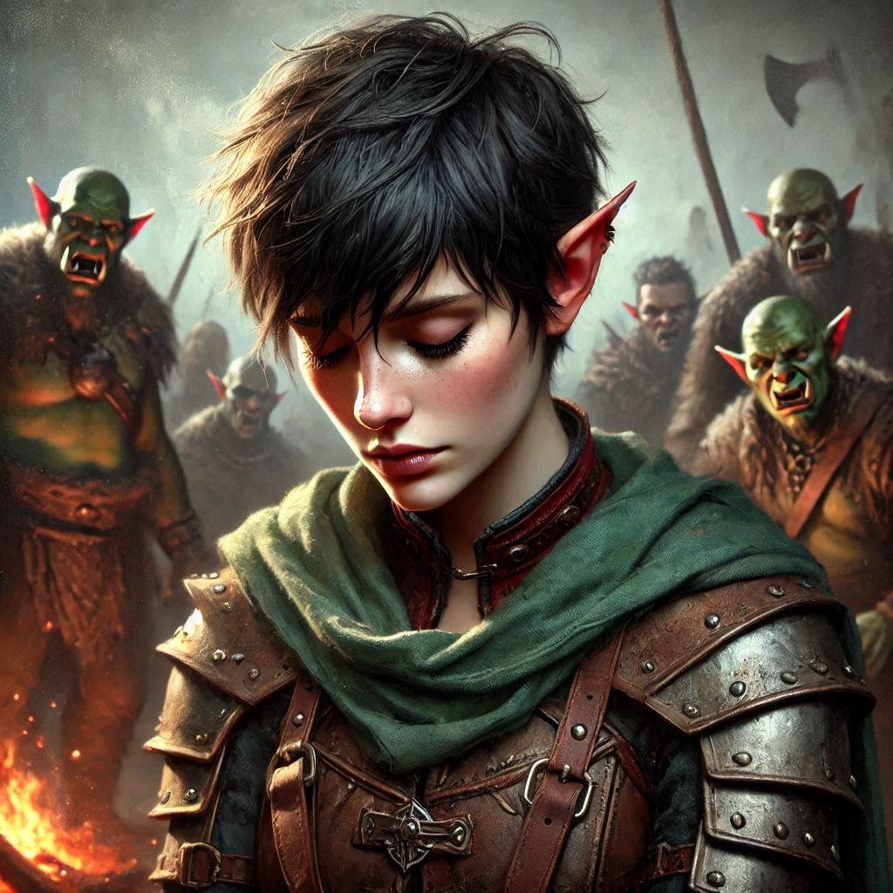

The Orcs of Astaroth
You watch Shamurel as he chats excitedly about the hidden paths through the Shadow Realm, the secrets of the dark elves, and the riches they might find along the way. Something feels off. The goblin’s too eager, too shifty. His sharp yellow eyes dart around constantly, as if he's planning something. You can feel it in your gut—a whisper of doubt you’ve learned to trust. You glance at Baider, who’s sharpening his axe, and lean in close.
“I don’t trust him,” you whisper. Baider grunts, barely looking up.
“He’s a goblin. Trust isn’t exactly their specialty.”
You know Baider respects strength, but even he must feel something’s wrong. Shamurel had led you this far without incident, but there’s been no sign of the orc tribe of Astaroth he promised. You’ve been wandering the Shadow Realm’s desolate, ghostly landscape for days. The twisted trees and dark clouds above seem to watch your every move.
“Maybe we should break away from him,” you suggest, eyes narrowing at the goblin who’s now laughing to himself about some joke only he understands.
Baider pauses. “If we break away, we might lose our way in this cursed place. The orcs are our best shot at surviving here.” He looks up, meeting your eyes for the first time in a while. “But if you’re sure, Kira, I’ll follow your lead.”
Elias, who’s been silently listening, finally speaks. “I trust your instincts, Kira. Shamurel’s been… off, but we have no clear alternative.” He looks around warily. “We can’t stay out here forever.”
You sigh, feeling the weight of leadership, but decide it’s time to go. Shamurel’s loyalty, if it ever existed, is fragile at best. “We need to find the orcs without him.”
Baider nods, and Elias tightens his grip on his bow. You approach Shamurel, who’s still snickering to himself. “We’re going a different way, Shamurel,” you say, your voice steady. “We’ve had enough of your games.”
The goblin freezes, his grin fading into a suspicious glare. “Different way? You think you’ll survive out here on your own, half-elf?” His voice drips with condescension. “You’ll die before you find Astaroth’s tribe.”
“We’ll take our chances,” you reply, stepping back as Baider and Elias join you, weapons ready.
Shamurel snarls, his sharp teeth bared. “Fools! You’ll regret this.” He spits on the ground and turns, vanishing into the shadows.
The three of you move cautiously in the opposite direction. The path ahead is treacherous, the ground uneven and the air thick with dark magic. But you press on, determined.
Days pass, and you begin to lose hope. Every direction seems the same—endless black trees, swirling mist, and ominous skies. Just when you think you’re lost, Baider suddenly stops. His nostrils flare as he inhales deeply.
“Orcs,” he mutters. “I can smell their camp.”
Sure enough, a distant glow flickers on the horizon. You follow Baider’s lead, heart pounding as you approach the orc stronghold. The camp is larger than you expected—dozens of tents, surrounded by watchtowers and massive orcs standing guard, their eyes glowing faintly in the darkness.
Before you can plan your next move, you’re surrounded. Orcs emerge from the shadows, weapons drawn. Baider raises his axe defensively, but you all know you’re outnumbered.
The largest orc steps forward, muscles rippling beneath his rough armor. “Baider Bloodhammer,” he growls. “You dare return to our lands?”
Baider steps forward, holding his ground. “I come to rally the orcs to war against the dark elves.”
The orcs laugh, a deep, menacing sound that makes your skin crawl. The leader grins. “Rally us? You? After your disgrace? You’ll have to prove yourself.”
You exchange a worried glance with Elias. This is what Baider feared. The only way to gain their respect is through combat.
“I’ll prove it,” Baider declares, his voice hard as iron. “By right of combat, I challenge your chief.”
The orcs cheer, circling around you as the challenge is accepted. The orc chief—a hulking beast with battle scars covering his body—steps forward with a cruel smile.
“You fight for your life, Bloodhammer,” the chief sneers. “And the lives of your friends.”
You and Elias watch helplessly as Baider steps into the ring. The fight begins with a thunderous clash of weapons, Baider’s hammer-axe meeting the chief’s brutal blade. Sparks fly, and the crowd roars. Baider fights valiantly, every blow fueled by his desire to protect you and prove himself. But the chief is stronger, faster.
You feel your heart sink as Baider takes a brutal hit to the side. He staggers, blood dripping from his wounds. The chief laughs, sensing victory.
With a final, crushing blow, Baider falls. The world seems to slow as you scream his name, but it’s too late. The orcs chant in unison, their chief standing over Baider’s body in triumph.
Tears blur your vision as two orcs grab you and Elias, dragging you toward the camp’s bonfire. “Your friend fought well,” one of them growls, “so we will honor him by eating you.”
You struggle against their grip, but the orcs are too strong. Elias looks at you, his face pale. “Kira… I’m sorry.”
This can’t be how it ends, you think, fury and grief boiling inside you.